VRayCarPaintMtl
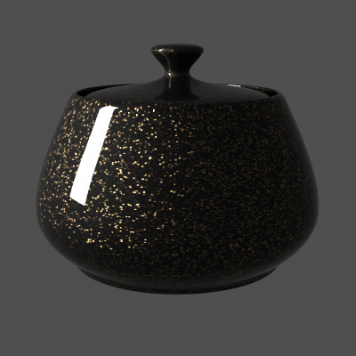
VRayCarPaintMtl Overview
The VRayCarPaintMtl material is a material that simulates a metallic car paint. It is a complex material with four layers: a base diffuse layer, a base glossy layer, metallic flakes layer, and clear coat layer. The material allows the adjustment of each of these layers separately.
If you just want to use the metallic flakes and make your own layered materials, you can use the VRayFlakesMtl.
Base Layer Parameters
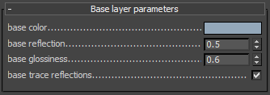 Base color - the diffuse color for the base layer.
Base reflection - the reflectivity of the base layer. The reflection color itself is the same as the Base color.
Base glossiness - reflection glossiness for the base layer.
Base trace reflections - when off, the base layer only produces specular highlights, but no (glossy) reflections.
Flake Layer Parameters
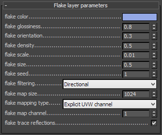 Flake color - the color of the metal flakes.
Flake glossiness - the glossiness of the metal flakes. It is not recommended to set this above 0.9 as it may produce artifacts.
Flake orientation - controls the orientation of the flakes relative to the surface normal. When this is 0.0, all flakes are perfectly aligned with the surface. When it is 1.0, the flakes are rotated completely randomly with respect to the normal. Values above 0.5 are not recommended as they can produce artifacts.
Example: The Flake Orientation Parameter
This set of images demonstrate the effect of the Flake orientation parameter. Note how lower values produce flakes more aligned with the surface normal, so that light is reflected more uniformly. Higher values produce more random flakes leading to more variation in the flake illumination.
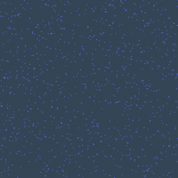
Flake orientation is 0.0
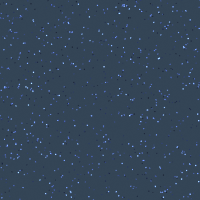
Flake orientation is 0.1
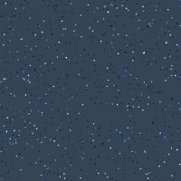
Flake orientation is 0.3
Flake density -
the density (number of flakes) for a certain area. Lower values produce less flakes and higher values produce more flakes. Set this to
0.0 to produce a material without flakes.
Example: The Flake Density Parameter
This set of images shows the effect of the Flake density parameter. Note how larger values produce more flakes, but do not change the flake size.
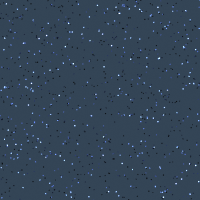
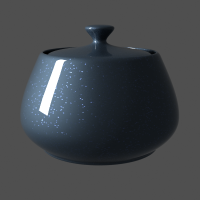
Flake density is 0.5
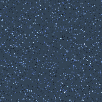
Flake density is 1.0
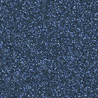
Flake density is 2.0
Flake scale - scales the entire flake structure.
Example: The Flake Scale Parameter
This set of images demonstrate the effect of the Flake scale parameter. Note how lower values scale the entire flake structure.
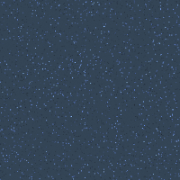

Flake scale is 0.005
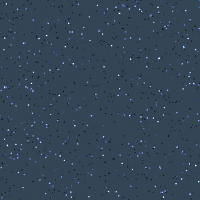
Flake scale is 0.01
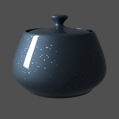
Flake scale is 0.02
Flake size - the size of the flakes relative to the distance between them. Higher values produce bigger flakes and lower values produce smaller flakes.
Example: The Flake Size Parameter
This set of images shows the effect of the Flake size parameter. Note how larger values make the individual flakes larger, but do not change their count.
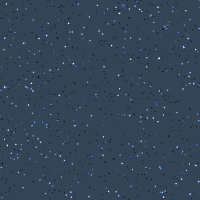
Flake size is 0.5
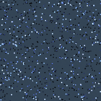
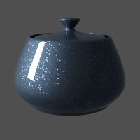
Flake size is 1.0
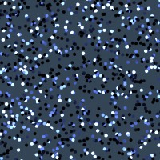
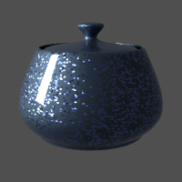
Flake size is 2.0
Flake seed - the random seed for the flakes. Changing this produces different flake patterns.
Flake filtering - determines the way the flakes are filtered. Filtering is extremely important to reduce the work required to produce a clean image. The possible values are:
-
Simple - this method is faster and uses less RAM but is less accurate. It averages the orientation of the flakes together, which may alter the appearance of the material when viewed from a distance.
-
Directional - this method is slightly slower and uses more RAM, but is more accurate. It groups the flakes based on their orientation before performing the filtering, so that the material appearance is preserved.
Example: The Flake Filtering Parameter
This example shows the effect of the Flake filtering parameter.
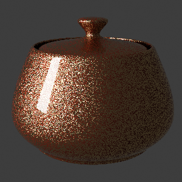
No filtering and no antialiasing; the result is very noisy because of the small flake size.
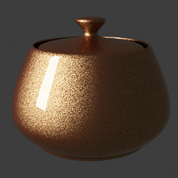
No filtering, Adaptive DMC antialiasing. The result is accurate, but very slow since a lot of AA samples are required to antialias the flakes.
Flake filtering set to Simple, no antialiasing. The filtering greatly reduces the noise, but alters the appearance of the material.

Flake filtering set to Directional, no antialiasing. The noise is reduced and the material appearance is correctly preserved.
Flake map size
- internally the material creates several bitmaps to store the generated flakes. This parameter determines the size of the bitmaps. Lower values reduce RAM usage, but may produce noticeable tiling in the flake structure. Higher values require more RAM, but tiling is reduced. Be careful when using the Directional filtering method, as it may quickly take up gigabytes of RAM for larger map sizes.
Example: Antialiasing Filters
Here is an example briefly demonstrating the effect of different antialiasing filters on the final result.
Note that rendering with a particular filter is not the same as rendering without a filter and then blurring the image in a post-processing program like Adobe Photoshop. Filters are applied on a sub-pixel level, over the individual sub-pixel samples. Therefore, applying the filter at render time produces a much more accurate and subtle result than applying it as a post effect. V-Ray can use all standard 3ds Max filters (with the exception of the Plate match filter) and produces similar results to the scanline renderer.
The Adaptive image sampler was used for the images below, with Min/Max rate of -1/3 and the Rand option on.
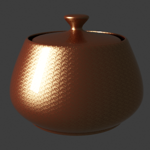
Simple filtering
Flake map size is 256.
Flake maps take less than 1 MB.
Simple filtering
Flake map size is 512.
Flake maps take between 1 and 2 MB.
Simple filtering
Flake map size is 1024.
Flake maps take 5 MB.
Simple filtering
Flake map size is 2048
Flake maps take 21 MB.
Directional filtering
Flake map size is 256.
Flake maps take 10 MB.
Directional filtering
Flake map size is 512.
Flake maps take 40 MB.
Directional filtering
Flake map size is 1024.
Flake maps take 161 MB.
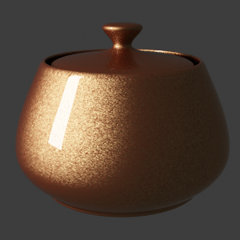
Directional filtering
Flake map size is 2048.
Flake maps take 645 MB.
Flake mapping type - specifies the method for mapping the flakes. The possible values are:
-
Explicit UVW channel - the flakes are mapped using the specified channel.
-
Triplanar from Object XYZ - the material automatically computes mapping coordinates in object space based on the surface normals.
Flake map channel - the mapping channel for the flakes when the Flake mapping type is set to Explicit UVW channel.
Flake trace reflections - when off, the flakes will only produce specular highlights, but no actual reflections will be traced.
Coat Layer Parameters
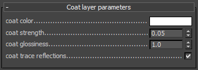 Coat color - the color of the coat layer.
Coat strength - the strength of the coat reflections when the surface is viewed directly from the front.
Coat glossiness - glossiness of the coat reflections.
Coat trace reflections - when off, the clear coat will only produce specular highlights, but no actual reflections
Options
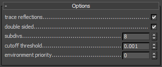 Trace reflections - when disabled, reflections from the different layers are not traced (they will only produce specular highlights).
Double sided - when enabled, the material is double-sided.
Subdivs - determines the amount of samples for the glossy reflections of the different layers.
Cutoff threshold - cutoff threshold for the reflections of the different layers.
Environment priority - specifies the environment priority for the environment override texture for this material. See the VRayMtl material for more information on this parameter.
Maps
This rollout contains the different texture maps for the various parameters of the material.
Notes
-
The VRayCarPaintMtl material needs to precalculate several textures related to the flakes. Depending on the Flake map size parameter, this may take a few seconds. When working in the material editor, this may lead to slight delays between changing a parameter and the update of the material swatch.